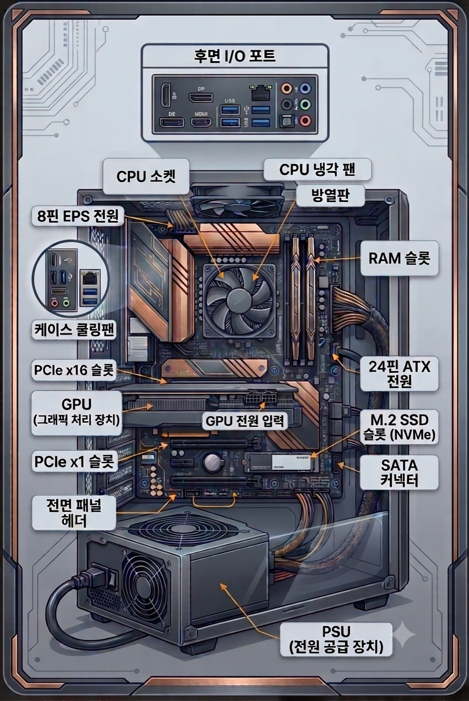

증상 선택
가장 가까운 항목을 고르면 원인 후보와 점검 순서를 볼 수 있습니다.
PC DIAGNOSTIC CENTER
부팅, 블루스크린, 장치 오류를 증상·부품·로그의 단서로 나눠 차근차근 확인합니다.

가장 가까운 항목을 고르면 원인 후보와 점검 순서를 볼 수 있습니다.
화면에 나온 코드를 넣으면 관련 오류와 함께 보는 항목을 바로 확인할 수 있습니다.
추천 진단 흐름
먼저 화면에 보이는 증상을 선택하고, 코드가 있으면 함께 검색하세요. 마지막으로 하드웨어 로그를 분석하면 부품 문제와 윈도우 설정 문제를 구분하기가 쉬워집니다.
부팅
부팅 파일, 업데이트 충돌, 저장장치 오류를 차례로 분리합니다.
가이드 열기블루스크린
반복되는 코드인지, 드라이버와 파일 손상인지 먼저 나눠 봅니다.
가이드 열기저장장치
슬롯 접촉, 펌웨어, BIOS 설정으로 나눠 확인합니다.
가이드 열기장치
포트, 허브, 절전 설정을 따로 구분해 점검합니다.
가이드 열기전원
PSU, 24핀, 8핀, 전면 패널 연결부터 봅니다.
가이드 열기절전
복귀 직후 문제인지, 연결 장치가 원인인지 빠르게 좁힙니다.
가이드 열기네트워크
무선 드라이버, 절전 설정, 공유기 신호를 분리해 확인합니다.
가이드 열기전원·발열
온도 로그와 팬, 통풍, 전원 공급 상태를 함께 확인합니다.
가이드 열기화면
그래픽 출력, 외부 모니터, Windows 탐색기 상태를 차례로 확인합니다.
가이드 열기성능
점유 프로세스와 응답 시간, 저장장치 상태를 함께 분석합니다.
가이드 열기개인정보처리방침과 이용약관은 하단 링크에서도 바로 확인할 수 있습니다.